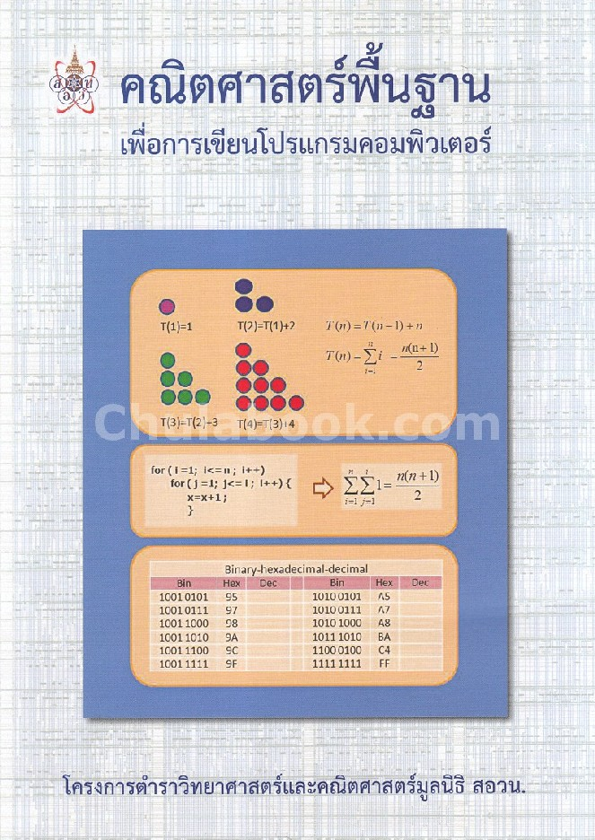

หนังสือคณิตศาสตร์เพื่อการเขียนโปรแกรมทางคอมพิวเตอร์
โดยมูลนิธิสอวน.
สวัสดีทุกๆคนครับ...
หนังสือคณิตศาสตร์นี้เป็นอีกหนังสือหนึ่งที่ช่วยให้ผมเข้าเรียนในสอวน.คอมพิวเตอร์ได้ง่ายขึ้นด้วยข้อสอบทางคณิตศาสตร์ซึ่งเป็นพาร์ท 60 ข้อ
ซึ่งหนังสือเล่มนี้เป็นหนังสือที่มีเนื้อหาในช่วงชั้นของม.ต้นและม.ปลายเป็นส่วนใหญ่ โดยในเนื้อหาที่เพิ่มเข้ามาในนี้มีเรื่องของตรรกศาสตร์ซึ่งเป็นหัวใจสำคัญของหนังสือเล่มนี้
เพราะคอมพิวเตอร์ในตรรกะในการทำทุกสิ่งทุกอย่างที่เป็นไปได้โดยเว็บนี้เป็นเว็บที่ผมเขียนขึ้นมาเพื่อในการอธิบายในเรื่องต่างๆในเข้าใจง่ายขึ้นผ่านการสรุปในบล๊อก
ในแต่ละหัวข้อจะมี1บล๊อกในการช่วยอธิบายโดยบล๊อกนั้นจะประกอบด้วยเนื้อหาสรุป,วิดิโอประกอบเนื้อหา(ครูอินเดีย)และแบบฝึกหัดที่ทำให้เข้าใจง่ายอีกด้วย
นอกจากนี้ยังมีเนื้อหาหนังสือของแต่ละบทซึ่งนำมาจากหนังสือเล่นนี้อีกด้วยซึ่งจะมาประกอนความเข้าใจได้อย่างดีครับ
หากมีข้อสงสัยหรือข้อเสนอแนะเกี่ยวกับเว็บนี้สามารถติดต่อผ่านทางอีเมล์ได้เลยครับ
ขอให้เว็บนี้เป็นประโยชน์ต่อทุกคนครับ
ขอบคุณครับ
ธนทัต บุญญอนุชิต
Math for POSN_Comp
© 2022 Math for POSN_Comp